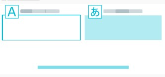

Noah Ramirez
I write, localize, and market content for a living — and genuinely love the work of finding the right words, in any language, to make an idea land.
My name is Noah Ramirez, and I have a passion for writing, localizing, and marketing content. I truly enjoy the simple beauty of finding the right words — often the simplest ones — to describe something, be it an idea, a product, a movie synopsis, the feeling you get when a song inspires you, or the joy of giving advice, support, or consolation to someone in need. This passion was awakened when I began working on a "metadata project" at a digital marketing agency in Santiago, Chile. As part of the job, I had to read the plots and production notes of movies and television series, identify the most meaningful parts of that information, and condense and convey them to viewers. That was already a fantastic experience and job, but it became even better thanks to the second phase of work: localizing it for global audiences. Sitting at the crossroads between cultures gave me profound insight into how people around the world not only consume content, but how they can be sold on it — and, hopefully, fall in love with it.
When I am not working to connect people and ideas or striving to get the most out of content (as well as the people and technologies that bring it to life), I enjoy running, playing soccer on the weekend, reading, shanking golf balls, badly managing fantasy football teams, e-learning and practicing coding, binge-listening true crime podcasts, and spending time with my beautiful family.
Experience
International Content Coordinator
The person who makes multilingual content projects "go." I bring new content projects to life and ensure operational success once they're implemented — developing workflows, establishing writing and editing processes and standards, managing and analyzing content-metrics data, and handling client communications.
Style Editor
As an editor and advisor, I guide a team of multilingual copywriters, translators, and journalists to ensure every piece of content is prepared with style, tone, accuracy, and the target audience in mind — staying current on terminology and SEO writing, and drafting and maintaining style guides.
Marketing QA Specialist
Dotting the i's and crossing the t's on digital marketing campaigns from inception to delivery — shaping the message on the creative side, then making sure it and all supporting assets (images, videos, links, calendars) arrive functional and fully optimized for their delivery method.
Skills

Localization 8 years AP Journalism
2 years
AP Journalism
2 years
 Cross-functional Communications
6 years
Cross-functional Communications
6 years
Synopsis Writing & Localization
The metadata project I worked on centered on descriptive content, and it was there that I was tasked with marketing movies and series, mainly from Latin America and Spain. The objective was simple: craft short synopses that lure in potential viewers.
Because the productions came from countries like Argentina, Brazil, and Mexico, I found myself watching countless trailers, researching directors and actors, and obsessing over Spanish and Portuguese words. I realized that words rarely translate one-to-one. Buried within sentences are layers of nuance, culture, and context, and the job of a translator (and, in this case, a copywriter) is to extract the ideas, buzzwords, characters, drama, and hooks and assemble them into the catchiest possible version of the story.
Choose a genre to read the synopses as they appeared on the streaming platform.
Let's talk
Open to roles in content, localization, editing, and marketing. The fastest way to reach me is email.